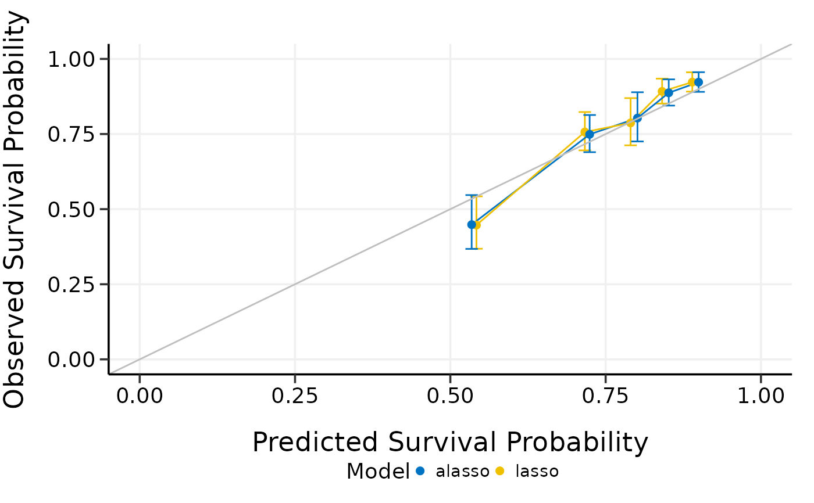

Compare high-dimensional Cox models by model calibration
Source:R/5_3_compare_by_calibrate.R
compare_by_calibrate.RdCompare high-dimensional Cox models by model calibration
Arguments
- x
Matrix of training data used for fitting the model; on which to run the calibration.
- time
Survival time. Must be of the same length with the number of rows as
x.- event
Status indicator, normally 0 = alive, 1 = dead. Must be of the same length with the number of rows as
x.- model.type
Model types to compare. Could be at least two of
"lasso","alasso","flasso","enet","aenet","mcp","mnet","scad", or"snet".- method
Calibration method. Could be
"bootstrap","cv", or"repeated.cv".- boot.times
Number of repetitions for bootstrap.
- nfolds
Number of folds for cross-validation and repeated cross-validation.
- rep.times
Number of repeated times for repeated cross-validation.
- pred.at
Time point at which calibration should take place.
- ngroup
Number of groups to be formed for calibration.
- seed
A random seed for cross-validation fold division.
- trace
Logical. Output the calibration progress or not. Default is
TRUE.
Examples
data(smart)
x <- as.matrix(smart[, -c(1, 2)])
time <- smart$TEVENT
event <- smart$EVENT
# Compare lasso and adaptive lasso by 5-fold cross-validation
cmp.cal.cv <- compare_by_calibrate(
x, time, event,
model.type = c("lasso", "alasso"),
method = "fitting",
pred.at = 365 * 9, ngroup = 5, seed = 1001
)
#> Starting model 1 : lasso
#> Start fitting ...
#> Starting model 2 : alasso
#> Start fitting ...
print(cmp.cal.cv)
#> High-Dimensional Cox Model Calibration Object
#> Random seed: 1001
#> Calibration method: fitting
#> Model type: lasso
#> glmnet model alpha: 1
#> glmnet model lambda: 0.01226207
#> glmnet model penalty factor: not specified
#> Calibration time point: 3285
#> Number of groups formed for calibration: 5
#>
#> High-Dimensional Cox Model Calibration Object
#> Random seed: 1001
#> Calibration method: fitting
#> Model type: alasso
#> glmnet model alpha: 1
#> glmnet model lambda: 0.03827431
#> glmnet model penalty factor: specified
#> Calibration time point: 3285
#> Number of groups formed for calibration: 5
#>
summary(cmp.cal.cv)
#> Model type: lasso
#> Calibration Summary Table
#> Predicted Observed Lower 95% Upper 95%
#> 1 0.5721389 0.4704003 0.4008863 0.5519681
#> 2 0.7055872 0.6935569 0.5661697 0.8496059
#> 3 0.7649804 0.8020453 0.7475810 0.8604775
#> 4 0.8085048 0.8355332 0.7474947 0.9339408
#> 5 0.8518968 0.9086230 0.8763437 0.9420912
#>
#> Model type: alasso
#> Calibration Summary Table
#> Predicted Observed Lower 95% Upper 95%
#> 1 0.5495367 0.4698499 0.3941648 0.5600675
#> 2 0.7209324 0.7187952 0.6535857 0.7905109
#> 3 0.7933952 0.8360191 0.7855318 0.8897513
#> 4 0.8365830 0.8180967 0.7180537 0.9320781
#> 5 0.8770442 0.9234083 0.8925803 0.9553010
#>
plot(cmp.cal.cv)
